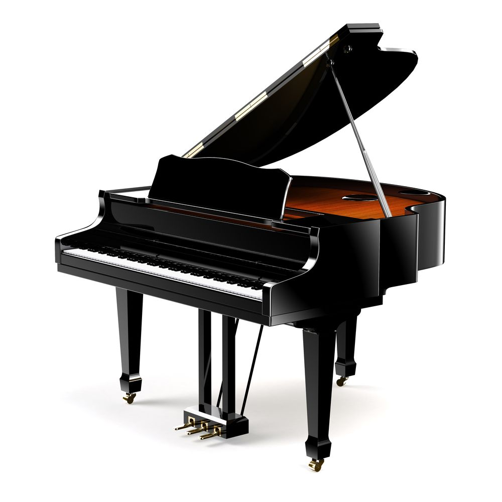

There are hundreds of different kinds of instruments people can learn to play though. Being able to play your favorite instrument has many advantages. Some use it as a pastime, others do this out of passion for music, and for some it’s kinda stress buster or meditation. Millions of people all over the world play all kinds of instruments as a way to express themselves. Others simply do it for entertainment, fun or to earn money.
Keyboards, the electronic piano, are extremely versatile and very low maintenance. Electronic keyboards are capable of recreating a wide range of instrument sounds and synthesizer tones with less complex sound synthesis.They are popular with younger children and are great for recording and changing performance. The main difference between a keyboard and a piano is that the sound is produced electronically and of course it is portable. Electronic keyboards are usually designed for home users, beginners and other non-professional users.

The piano, in particular, has been an unparalleled outlet for those seeking escape, creative expression, and simply fun and joy. The modern piano has 36 black and 52 white keys, making a total of 88 keys and is played using a keyboard. The piano was first invented around 1700 and is used for many types of music including classical, jazz, and popular. Often thought of as the best musical instrument to begin playing it is highly versatile, has a wide-range and a grand ability to change dynamics. Playing the piano is a workout all its own, and offers different physical and physiological advantages to players of all ages.
The guitar is a string instrument with anything from four to eighteen strings with a normal guitar having six strings. The sound is projected acoustically and it is typically played by strumming (or plucking) the strings with one hand and fretting the strings with the other hand. Learning to play the guitar is great for confidence building and developing social skills. As with most musical instruments, learning to play the guitar enhances fine motor skills in children as well as improving their concentration, memory and focus skills.
The violin is a string instrument and is the smallest and highest-pitched instrument in its family. Typically, the violin has four strings and is usually played by drawing a bow across its strings. Violins are important musical instruments in a wide variety of musical genres including jazz, country, metal and folk music.For aspiring musicians, learning to play the violin is at the top of many bucket lists, and for good reason.Learning to play the violin has great benefits including improving coordination, concentration and discipline. Playing the violin requires impeccable posture, more than almost any other musical instrument.It takes strength and balance to hold your body and your violin in the proper position for extended periods of time.
Drums are percussion instruments and are the oldest form of instruments, existing in a wide variety of shapes and sizes. They are naturally played by being struck with different tools known as beaters; anything from wooden sticks to wire brushes to bare hands. Some drums are tunable whilst others are non-tunable. Drums produce sounds by the vibration of a stretched membrane known as the head. The head covers either one or both ends of a hollow body which is known as the shell. Playing drums can relieve frustration, disappointment, and stress.